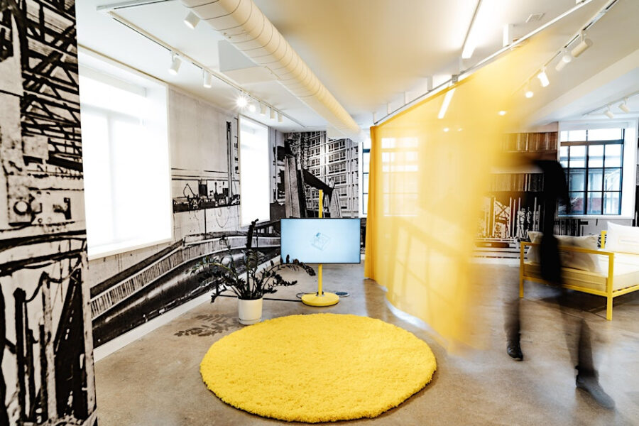

SHIFT Housing Summit: Morning Session
This convening of Chicago-based practitioners, scholars, and artists explores the social, political and ecological concerns around housing.
In its closing weeks, SHIFT will host a Housing Summit that brings together practitioners, researchers, policymakers, and cultural producers to reflect on housing as one of the Biennial’s central fields of inquiry. Developed in collaboration with the National Public Housing Museum and building on the research presented in the Inhabit / Outhabit capsule, the Summit unfolds across two sites: a morning session at the Museum, followed by an afternoon gathering at SHIFT’s exhibition venue at 840 N Michigan Avenue.
Through panels and discussions, the program frames housing not only as a spatial and architectural challenge, but as a political, social, and ecological question—and concludes with a poetry reading that opens space for reflection beyond disciplinary boundaries, underscoring SHIFT’s commitment to multiple forms of knowledge and expression.
The morning program centers Chicago as a living laboratory for housing futures, convening civic, legal, and cultural perspectives to consider what it means to build housing systems grounded in equity and public responsibility. Discussions move across scales, from policy frameworks to the institutional and spatial conditions that shape access, stability, and belonging.
The session combines reflections with design-centered case studies that explore alternative models for affordability, shared living, and cooperative development including a conversation on breakthrough moments in Chicago’s housing history and the role of cultural institutions in shaping what comes next.
Lead support for BREAKTHROUGH and related symposium programming at the National Public Housing Museum is provided by the Alvin H. Baum Family Fund.
Schedule:*
Lead support for BREAKTHROUGH and related symposium programming at the National Public Housing Museum is provided by the Alvin H. Baum Family Fund.